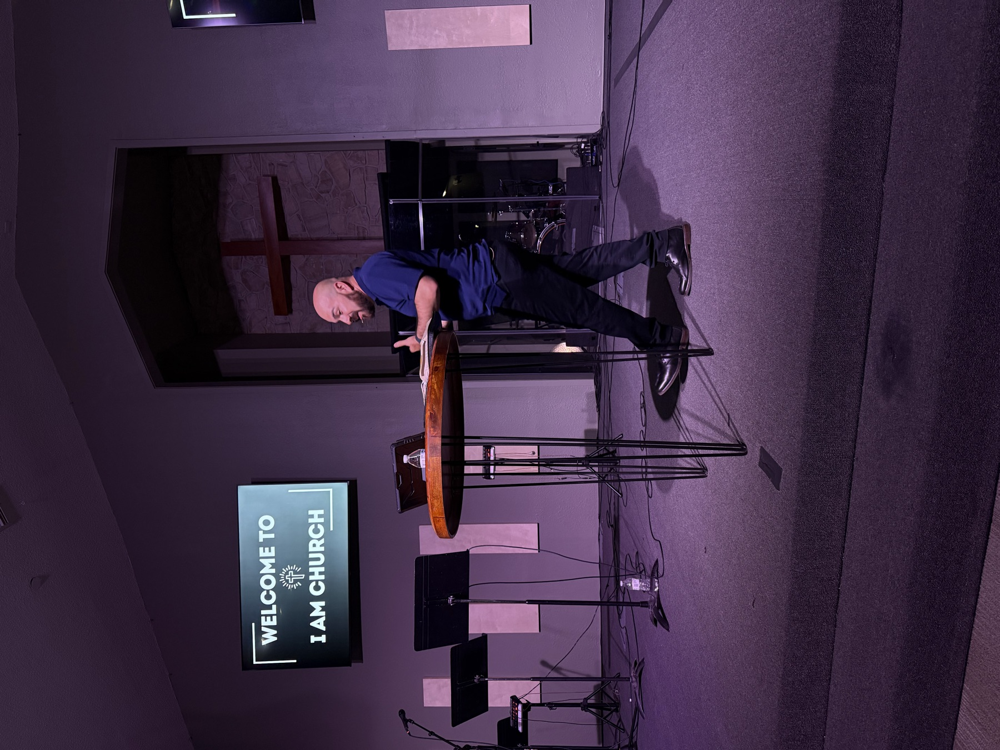

Newborn – 5th
I AM Kids
Safe, joyful rooms where children know they're loved — both services.

Pastor Alex Araiza · Part 3
What do you do with a seat you didn't earn? A message on grace, hospitality, and why the table stays open.
In person or online, in a small group or on your own time — there's a way in that fits you.
Doors open thirty minutes early for coffee. Come as you are — kids' check-in runs the whole service.
Nothing is too small or too tangled. Share a request in confidence and our prayer team will carry it this week — you can ask to be contacted, or stay anonymous.
Share a request →"For steady work, and peace about the waiting."
"Thanksgiving — my mom's scan came back clear."
"For our neighbors here in Glendale this winter."
We're not a polished crowd with the answers rehearsed. We're carpenters and nurses, students and retirees, skeptics and believers — people who keep showing up because we've met a grace that keeps showing up for us.
Every Sunday we read the Scriptures plainly, sing without apology, and pray for the city we live in. Come early for coffee, stay late for conversation.
If it's your first time, you'll be met at the door, not lost in a lobby. We'd love to save you a seat.
See how what you're good at can serve the people around you.
Every gift feeds our neighbors, keeps the lights on, and sends help beyond our walls. It takes about a minute.